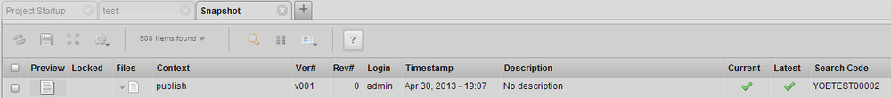

A change made in TACTIC 4.0 is the use of search code instead of search id when relating sObjects to their snapshots (or checkins). Until 4.0, the search id was being used to maintain this relation. Now, if you look at the code column of a sObject and the search code column of a snapshot checked in to this sObject, you will find that both have the same value. This tells TACTIC that the snapshot is associated with this sObject.

The reason for this change was merging issues between multiple tables of snapshots. When using search id to merge between tables, there were many discrepancies which could not have been easily solved. Using search code to merge tables is a much easier process. There are also other reasons which are not very important.